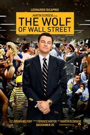

LE LOUP DE WALL STREET

25 décembre 2013 en salle 2h 59min
Biopic, Drame De Martin Scorsese
Par Terence Winter Avec :
Leonardo DiCaprio, Jonah Hill, Margot Robbie
Titre original The Wolf Of Wall Street
Critiques Presse; 4.0/5
Critiques Spectateurs: 4.3/5
Description:
Jordan Belfort (Leonardo DiCaprio), jeune louveteau de 22 ans, déjà appâté par l’argent, pose ses valises à Wall Street. Il s’y fait dépuceler par Mark Hanna (Matthew McConaughay). Victime du lundi noir de 1987, Jordan va découvrir le chômage ce qui va paradoxalement lui acérer davantage les canines.
I’ve been a poor man, and I’ve been a rich man, and I choose rich every fucking time!!
À la recherche désespérée d’un job, il recommence tout en bas de l’échelle dans une petite compagnie de Long Island spécialisée dans des penny stocks à moins d’un dollar. Ce nouveau départ va en fait lui permettre de révéler son ingéniosité. Vendeur redoutable, il ne supporte pas de perdre.
Never take ‘no’ for an answer.
De succès en succès, il va rapidement monter sa propre entreprise de courtage: Stratton Oakmont. Avec une armée de commerciaux composées de Donnie Azoff (Jonah Hill), Brad Bodnick (Jon Bernthal), Nicky Koskoff (P. J. Byrne), il va monter un empire. Putes, alcool, cocaïne et autres malversations plus tard, le triomphe fulgurant de Jordan fait des jaloux.
L’agent du FBI Patrick Denham (Kyle Chandler) finit par le torpiller. Belfort perd tout: sa fortune, sa femme-trophée (Margot Robbie) et son enfant.
Après un petit tour en prison, Jordan continuera de vivre de ses techniques de vente, les paillettes en moins, en tant que coach.
Les actrices et acteurs:
I
T
S
Q
U
I
Z
T
I
M
E
Nombre de nominations?
Quel était le budget ?
Et le nom du yacht?
T
S
Q
U
I
Z
T
I
M
E